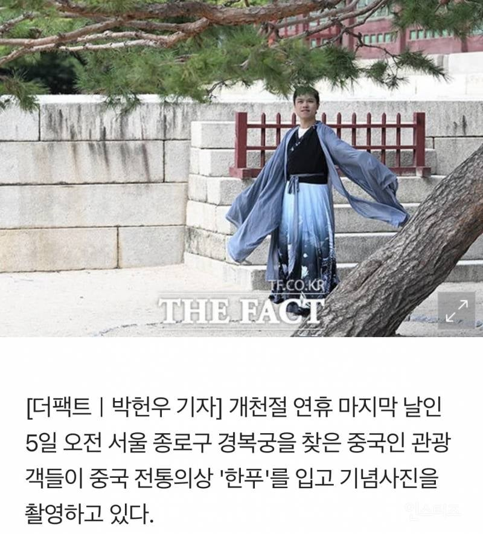

짱혐은 괜히 생기는게 아니다
소국 주제에 왜 나대지
5호 16국으로 찢어져라
쟤네는 자랑할만한 자기들 문화가 없는듯? 덩치만 크고 열등감만 가득하네
문화가 없음(지들이 박살냄)
해충이 딱 어울리는 표현이야.
글로벌하게 동의할거다. 중국인들이 타국 여행지에 와서 저딴 "문화테러" 하는걸 알게된다면.
방역작업을 좀 거국적으로 할 필요가 있어보여
이번 일 외에도.
참 어지간히도 내세울게 없나보다 ㅋㅋㅋㅋ
짜장부인
이미지 훼손 시키는 행위니까 입구컷 해도 되는 거 아니냐
그래서 단속하고있음
문화는 소유할수 없다는 개념 자체를 이해를 못함
축구 문화를 영국이나 피파가 소유할수 있나?
소울이나 힙합이 미국에서 만들어졌는데, 그래서 뭐? 다른동네에서 하면 미국한테 굽신거려야하나?
아무도 한푸를 안찾으니 ㅋㅋㅋㅋㅋ 이렇게라도 꼽사리 껴서 알려보겠다고
참깨옷 입고 들어올거면 정식으로 사신단 꾸려서 들어오라고 해라. 어디 오랑캐주제에
왜 안막지
막는데 저 지랄 하는 거임
저런 스타일 한푸가 한복에서 유래한 거 아니야? 원나라에서 유행한 고려양이 명나라로 이어진 거 아님?
제발 우리를 봐주세요!! 제발 우리는 알아주세요!!
자국의 문화가 없어서 소국의 문화에 기댈 수 밖에 없는 문화기생충 수준...
쟤네가 보기에도 한복이 멋있어 보이고 한국 문화가 멋있어 보이긴 한가봐 ㅋㅋㅋ
이 악물고 저러는 거 보니깐
왜 Mbc만없냐
테무에서 만드는 가상의 복식 입고 좋댄다 ㅋㅋ
뭐래 만주족한테 따잇당한 병신들이 ㅋ
팔척부인 뭔데 키 존나크네
중국쪽 들어가서 보면 중국인들도 쪽팔려함 다른나라 가서 하지말라고
과거에 집착하는 병신들 ㅋㅋㅋ
"아악!!! 고려봉자다!!! 도망쳐!!!" 비명 나올 때 까지 존나게 줘패야됨 ㅋㅋㅋ
웃긴건 한복장인, 기모노장인은 있고, 하다못해 베트남전통복 장인도 있는데,
한푸는 그딴거 없댔던가.
있었는대 그때 없어진건가?
불쌍하다..
에초에 관복 거지고 속국이다 이지랄 하는게 병신임.
니들 정치당원들 전부 양복입는거 보니 영국 속국이네
너네 한푸가 얼마나 창피하길래 자금성을 돌아다니지 못한다는 것이냐. 너네 옷이면 너네 나라 궁궐에 오는 사람들하고 사진 찍고 자랑도 하면 얼마나 좋겠니. 근데도 차마 부끄러워서 못입고 다니고 이웃나라 궁궐에 와서야 심리적 딸딸이를 치는구나
미개해